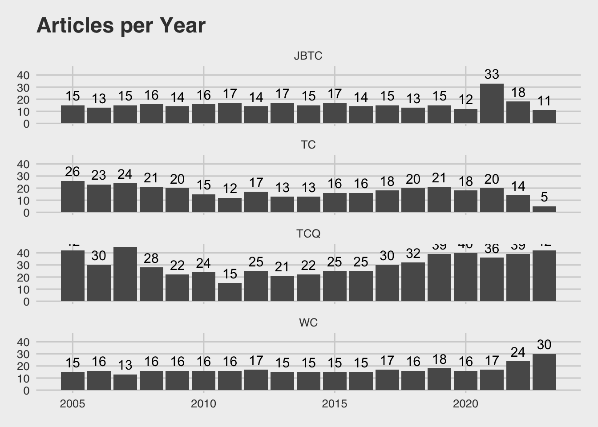

Wk 03: Exploring TC journals, (pt 2)
Overview
Last week we started with a CSV of results for TC and a separate CSV of results for TCQ. We cleaned, explored, merged, and visualized the data before saving it out in two formats: an .RData file and a .csv.
This week we’ll add two more journals…
Load libraries and data
Let’s confirm the data is what we expect.
Code
glimpse(both_data)Rows: 914
Columns: 8
$ author_full_names <chr> "Fuglsby, Brandi J.; Veeramoothoo, Saveena (Chak…
$ article_title <chr> "Regulating Emotions for Social Action: Emotiona…
$ source_title <chr> "TECHNICAL COMMUNICATION QUARTERLY", "TECHNICAL …
$ abstract <chr> "This article describes students' emotional inte…
$ cited_references <chr> "Agboka Godwin Y., 2018, CITIZENSHIP ADVOCACY; […
$ cited_reference_count <dbl> 32, 86, 54, 28, 66, 22, 27, 38, 5, 20, 50, 4, 55…
$ publication_year <dbl> 2023, 2021, 2020, 2015, 2014, 2013, 2010, 2009, …
$ publication_type <chr> "J", "J", "J", "J", "J", "J", "J", "J", "J", "J"…And recreate our plot.
Code
library(ggthemes)
# count of articles by year, by journal
year_plot <- ggplot(both_data, aes(x = publication_year)) +
geom_bar() +
labs(title = "Articles per Year in TC and TCQ",
x = "Publication Year",
y = "Number of Articles") +
facet_wrap(~ source_title, ncol = 1) +
geom_text(stat = 'count', aes(label = after_stat(count)), vjust = -0.5, size = 4)+
theme_economist_white()
year_plotRead in new data
I’ve gone to web of science and queried for articles published 2005 to present in two journals:
- Journal of Business and Technical Communication
- Written Communication
Both are .xls files located in my data folder.
Code
library(readxl)
# read in JBTC data
jbtc <- read_excel("data/wos_jbtc.xls")
# read in Written Comm data
wc <- read_excel("data/wos_wc.xls")Join datasets
Our goal is to add our two new datasets into the TC and TCQ data we already created.
Check data
Upon checking the dimensions of the data, I see I have a lot of data columns I don’t need.
Clean names
Before we can join the datasets, we have to clean names.
Code
library(janitor)
# clean names of jbtc and wc
jbtc <- clean_names(jbtc)
wc <- clean_names(wc)Combine jbtc and wc with bind_rows
Because they have the same variables, we can use bind_rows
Select target columns
We’ll reuse our code from week 2 to select the columns of interest.
Join the two combined sets
Before we join them, let’s do some math to see how many articles we should end up with.
Code
[1] 1537Now, let’s join them and see how many articles we actually end up with.
Explore the full data
Code
# provides overview of numeric variables
summary(full_data) author_full_names article_title source_title abstract
Length:1537 Length:1537 Length:1537 Length:1537
Class :character Class :character Class :character Class :character
Mode :character Mode :character Mode :character Mode :character
cited_references cited_reference_count publication_year publication_type
Length:1537 Min. : 0.00 Min. :2005 Length:1537
Class :character 1st Qu.: 18.00 1st Qu.:2009 Class :character
Mode :character Median : 34.00 Median :2015 Mode :character
Mean : 35.59 Mean :2014
3rd Qu.: 51.00 3rd Qu.:2019
Max. :169.00 Max. :2023
NA's :623 Do we have all four journals represented?
Code
unique(full_data$source_title)[1] "TECHNICAL COMMUNICATION QUARTERLY"
[2] "TECHNICAL COMMUNICATION"
[3] "WRITTEN COMMUNICATION"
[4] "JOURNAL OF BUSINESS AND TECHNICAL COMMUNICATION"Add journal abbreviation column
For visualization purposes, let’s add a new column of journal abbreviations
Code
# this dataframe maps each full name to an abbreviation
journal_abbreviations <- data.frame(
full_name = c("TECHNICAL COMMUNICATION QUARTERLY", "TECHNICAL COMMUNICATION", "WRITTEN COMMUNICATION", "JOURNAL OF BUSINESS AND TECHNICAL COMMUNICATION"),
abbreviation = c("TCQ", "TC", "WC", "JBTC")
)
journal_abbreviations full_name abbreviation
1 TECHNICAL COMMUNICATION QUARTERLY TCQ
2 TECHNICAL COMMUNICATION TC
3 WRITTEN COMMUNICATION WC
4 JOURNAL OF BUSINESS AND TECHNICAL COMMUNICATION JBTCNow we can merge the full data with the abbreviations
Code
[1] "JBTC" "TC" "TCQ" "WC" source_title
1290 WRITTEN COMMUNICATION
330 TECHNICAL COMMUNICATION
149 JOURNAL OF BUSINESS AND TECHNICAL COMMUNICATION
1321 WRITTEN COMMUNICATION
545 TECHNICAL COMMUNICATION
1277 WRITTEN COMMUNICATION
979 TECHNICAL COMMUNICATION QUARTERLY
189 JOURNAL OF BUSINESS AND TECHNICAL COMMUNICATION
864 TECHNICAL COMMUNICATION QUARTERLY
536 TECHNICAL COMMUNICATION
1002 TECHNICAL COMMUNICATION QUARTERLY
103 JOURNAL OF BUSINESS AND TECHNICAL COMMUNICATION
1493 WRITTEN COMMUNICATION
578 TECHNICAL COMMUNICATION
1090 TECHNICAL COMMUNICATION QUARTERLY
1067 TECHNICAL COMMUNICATION QUARTERLY
781 TECHNICAL COMMUNICATION QUARTERLY
220 JOURNAL OF BUSINESS AND TECHNICAL COMMUNICATION
1195 TECHNICAL COMMUNICATION QUARTERLY
443 TECHNICAL COMMUNICATION
author_full_names
1290 Ellison, Tisha Lewis; Robinson, Bradley; Qiu, Tairan
330 Shirley, Beth J.
149 McNair, Lisa D.; Paretti, Marie C.
1321 Hoglund, Heidi
545 Boettger, Ryan K.; Friess, Erin
1277 Salas, Nayme; Pascual, Mariona; Birello, Marilisa; Cross, Anna
979 Tebeaux, Elizabeth
189 Johnson-Eilola, Johndan; Selber, Stuart A.
864 Williams, Miriam F.
536 Tirdatov, Ilya
1002 Ren, Jingfang
103 Petersen, Emily January; Walton, Rebecca
1493 Olive, Thierry; Barbier, Marie-Laure
578 Thielsch, Meinald T.; Perabo, Isabel
1090 Beliwoar, Hannah
1067 Graham, S. Scott
781 Sapienza, Filipp
220 Hasrati, Mostafa
1195 Kelly, Ashley Rose
443 Voss, Dan; Flammia, Madelyn
article_title
1290 Examining African American Girls' Literate Intersectional Identities Through Journal Entries and Discussions About STEM
330 Post-Fact Fact Sheets: Dissociative Framing as a Strategy to Work Past Climate Change Denial
149 Activity Theory, Speech Acts, and the Doctrine of Infelicity'': Connecting Language and Technology in Globally Networked Learning Environments
1321 The Heartbeat of Poetry: Student Videomaking in Response to Poetry
545 Content and Authorship Patterns in Technical Communication Journals (1996-2017): A Quantitative Content Analysis
1277 Embedding Explicit Linguistic Instruction in an SRSD Writing Intervention
979 English Agriculture and Estate Management Instructions, 1200-1700: From Orality to Textuality to Modern Instructions
189 Strange Days: Creating Flexible Pedagogies for Technical Communication
864 Gun Control and Gun Rights: A Conceptual Framework for Analyzing Public Policy Issues in Technical and Professional Communication
536 Web-Based Crowd Funding: Rhetoric of Success
1002 Becoming a Writing Researcher
103 Bridging Analysis and Action: How Feminist Scholarship Can Inform the Social Justice Turn
1493 Processing Time and Cognitive Effort of Longhand Note Taking When Reading and Summarizing a Structured or Linear Text
578 Use and Evaluation of Presentation Software
1090 Everyday Matters: Reception and Use as Productive Design of Health-Related Texts
1067 Agency and the Rhetoric of Medicine: Biomedical Brain Scans and the Ontology of Fibromyalgia
781 A Rhetorical Approach to Single-Sourcing Via Intertextuality
220 Material and Credentialing Incentives as Symbolic Violence: Local Engagement and Global Participation Through Joint Publication
1195 On the Frontier of Science: An American Rhetoric of Exploration and Exploitation
443 Ethical and intercultural challenges for technical communicators and managers in a shrinking global marketplace
abstract
1290 This article examines how three African American girls, ages 10 to 18, used journaling and interviews to better understand science, technology, engineering, and mathematics (STEM) as part of their literate identities. Drawing on prior work about literate identities, the authors introduce the concept of literate intersectional identities, which describes how participants' diverse histories, literacies, and identities traverse categories, communities, genres, and modes of meaning within the context of a STEAM workshop. The authors employed open and thematic coding to analyze the girls' journal entries in an effort to answer a question: In what ways do African American girls' journal writings and interviews about STEM reflect and influence their literate identities in a digital app coding workshop? Findings reveal how their writings about race, access, and the underrepresentation of women of color in STEM helped them make sense of their self-assurance, self-awareness, and agency as girls of color interested in STEM careers.
330 Purpose: This article presents a new rhetorical model for science and technical communication-specifically climate change communication-which the author is calling dissociative framing, in which climate change can be dissociated from the behaviors necessary to mitigate the human contribution to climate change, while positive associations are formed with those behaviors. This model serves as an alternative to the knowledge deficit model still in use in much science communication and is applicable both for students and practitioners of technical communication. Method: The model was developed by examining Matthew Nisbet's work on framing in conjunction with Perelman and Olbrechts-Tyteca's work on dissociation. I conducted a coded rhetorical analysis of two fact sheets produced by the Utah State University Extension Office with information on how their audience can change personal behaviors to mitigate their personal impact on climate change. I suggest how a dissociative frame would present the information more effectively. Results: A dissociative framing model can provide practitioners in technical and professional communication (TPC) a way to work around science skepticism and motivate action, especially when working with short, community-based genres, and can provide teachers of technical communication with a heuristic for instructing students on how to best engage a skeptical audience. Conclusion: While rural communities in the United States are especially prone to climate skepticism, it is important that they be informed and empowered to make the necessary behavioral changes to mitigate the human impact on climate change. Fact sheets published by extension services provide an excellent opportunity to inform and empower. A dissociative framing model provides a clear way to empower these communities with knowledge of how to mitigate their impact on climate change without diving into the political issues embroiled in climate science.
149 This article draws on activity theory, politics of the artifact, and speech act theory to analyze how language practices and technology interplay in establishing the social relationships necessary for globally networked teams. Specifically, it uses activity theory to examine how linguistic infelicities and the politics of communication technologies interplay in virtual meetings, thereby demonstrating the importance of grounding professional communication instruction in social as well as technical effectiveness. That is, students must learn not only how to communicate technical concepts clearly and concisely and recognize cultural differences but also how to use language and choose media in ways that produce the social conditions necessary for effective collaboration in globally networked environments. The article analyzes two case studies-a workplace and a classroom-that illustrate how the mediating functions of language and the politics of technology intersect as mediating tools in globally networked activity systems. It then traces the implications of that intersection for professional communication theory and pedagogy.
1321 This article contributes to an emerging body of scholarship on multimodal composition in the poetry classroom through a study of Finnish lower secondary students' digital videomaking in response to poetry. The study explores students' use of semiotic resources in their interpretive work in transmediating a poem into a digital video, with a particular interest in their use of sound elements. Based on social semiotic theory of multimodality, the analysis shows how the students in a variety of ways used sound elements, together with other semiotic resources, to explore their interpretation of the poetic text. Sound elements in particular became a key resource in the interpretive work, giving the students the opportunity to elaborate on topical issues of interest and importance to them while reinforcing their social agency. The study demonstrates the relevance of sound elements in students' digital composing and explorations of poetry. Furthermore, it reveals how the students showed a capacity as well as a willingness to act, to have influence, and to make substantiated claims for recognition regarding critical issues related to sexuality and society.
545 Purpose: The maturity of technical communication merits a comprehensive, longitudinal analysis of the content published in its leading journals and the scholars who produce this research. Although reflexive research is common in the sciences and social sciences, few studies have analyzed the body of research in technical communication. Clarity on content and authorship patterns can help position the field for future relevance and sustainability. Method: We conducted a quantitative content analysis on 672 articles published in five leading technical communication journals from 1996-2017. Articles were coded on nine content variables related to primary topic, primary audience, and authorship. We subsequently conducted a correspondence analysis on the variables to identify how specific content areas associated with the journals. Results: Content and authorship patterns were near identical to the patterns found in the field 30 years prior. The journals published content primarily focused on rhetoric, genre, pedagogy, and diversity. In contrast, field-defining topics-usability/UX, comprehension, design, and editing and style-appeared in the sample less than expected. A majority of research was single-authored and written by female first authors; further, a majority of the first authors had academic affiliations in the United States. Conclusion: Scholars must consider if these content and authorship patterns are the products of deliberate choices and, if so, if this is the field's inevitable trajectory for the next 30 years. We argue that certain topics are being overproduced while other topics that established the field are being underproduced and, in some cases, being assumed by other disciplines.
1277 Teaching linguistic aspects relevant to text construction is an essential component of any thorough writing instruction program, despite the conflicting evidence regarding its effectiveness. In this study, 889 second- and fourth-grade students were assigned to one of three conditions: Self-Regulated Development (SRSD), SRSD-connectors (SRSD-C), and business-as-usual (BAU). The experimental conditions addressed planning and self-regulation strategies to write opinion essays, but only the SRSD condition included explicit teaching of connectors (e.g., because) and discourse markers (e.g., In conclusion). Children in both experimental conditions outscored children in the BAU condition across grades and outcome variables. In addition, the SRSD condition showed larger effect sizes on Grade 2 children's gains in text quality, number of genre-appropriate elements, and number of connectors than the SRSD-C condition. The study provides evidence of the effectiveness of explicitly teaching functionally motivated linguistic representations within a SRSD program. Theoretical and educational implications are discussed.
979 This article discusses the history and development of English agriculture and estate management instructions, 1200-1700, as these shifted from oral to textual forms. Beginning with manuscript treatises that influenced important instruction books printed in the 16th century, the article shows how major agricultural writers developed instructions for a range of users. By the close of the 17th century, agricultural and estate management books exemplified increasingly modern presentation and style.
189 The COVID-19 pandemic created major disruptions in technical communication classrooms everywhere. Although technical communication instructors are used to teaching in a variety of contexts and settings, adopting a flexible approach in the first place will allow them to be better prepared for the changing dynamics of an unpredictable world. The authors present an approach that constructs pedagogical scaffolding to emphasize outcomes, interactions, relationships, and projects. These interrelated aspects form a coherent vision that can support both pedagogical planning and real-time decision making in specific instructional situations.
864 The author proposes Policy, Roles, Sites (PRS), a conceptual model to help technical communicators analyze high-stakes, long-debated public policy issues and reveal ways that technical and professional communication informs public policy development and implementation. The author demonstrates how the PRS model can be used to examine complex public policy issues from race and policing to gun rights and gun control, as well as policy issues that intersect these seemingly disparate issues.
536 Purpose: To identify the main rhetorical techniques actually used to secure investors' support in some of the most successful (most-funded) Web-based crowd funding projects. The study serves to bridge the gap between theoretical research of rhetoric and the needs of business communication practitioners by identifying the means of persuasion that can be used by online crowd funding entrepreneurs. Method: Qualitative analysis of thirteen crowd funding project descriptions posted on a major Web site-www.kickstarter.com-was performed to identify specific rhetorical techniques via text coding. The sample included the most-funded projects to date, one from each of the thirteen project categories on Kickstarter. Aristotle's concept of ethos, pathos, and logos served as a basic framework for developing a more detailed classification of rhetorical means of persuasion used in the projects. Results: The most-funded projects have been found to contain all three types of rhetorical appeals (ethos, pathos, and logos), subdivided into a total of twelve specific subtypes most commonly encountered in the descriptions from the sample. The subtype definitions have been developed and refined over the course of several reviews. Conclusion: The research data made it possible to create a rhetorical profile of a successful crowd funding project description representing a summary of the rhetorical techniques identified during the study. Although this summary reflects a hypothetical all-inclusive case, it can be used as a benchmark when drafting crowd funding project descriptions. The study also identified specific directions for future research that could determine the influence of project description rhetoric on donor decisions.
1002 <NA>
103 This article calls for recognition of ways in which feminisms have, do, and can inform social justice work in technical and professional communication (TPC)even social justice work that is not explicitly feminist. The authors distill some areas of feminist TPC scholarship that are relevant to future social justice work: (a) epistemological contributions, ways of knowing and methods for discovering them and (b) reclamations of dominant topics, groundwork laid by feminist research on technology and science. They close with nine recommendations to inspire scholars with specific ways to use feminist methodologies and theories to enhance social justice scholarship.
1493 We examined longhand note taking strategies when reading and summarizing a source text that was formatted with bullets or that was presented in a single paragraph. We analyzed cognitive effort when reading the source text, when jotting notes, when reading the notes, and when composing the summary, as well as time spent in these activities and the content of the notes and the summaries. With a formatted text, students' perceived comprehension difficulty was lower and they expended less cognitive effort, spent less time reading the text, and noted more ideas. While composing the summary, only those students who read the formatted source text continued selecting ideas in their notes. Finally, the summaries were unaffected by the formatting of the source text. The study shows that formatting a source text with bullets facilitates note taking by helping students to grasp its structure and by reducing the cognitive effort of reading.
578 Purpose: Although computer-based presentations are nowadays an expected standard, empirical research on them is still surprisingly rare: Little knowledge exists about general attitudes toward presentation software or users' functional demands other than editing texts and images. Therefore, we focus in our explorative study on users' handling and evaluation of such software, including a comparison between educational and business users. Method: A total of 1014 participants (51% female, 49% male) took part in a web-based study. Among them were 444 students and 570 employees from different fields. The online questionnaire consisted of 67 questions in three parts and was based on the current literature and ratings of five experts. Results: Our results show a strong preference for using Microsoft PowerPoint, which led to rather satisfied users. Computer-based presentations are mainly used in educational settings, talks, and meetings. Differences between students and employees were identified, with the latter showing a broader use. Furthermore, independent of occupation, participants stressed the importance of usability aspects such as ease of use, compatibility, or loading speed; however, they equally desired more creativity in computer-based presentations and better speakers. Conclusions: The process of slide generation seems to be patchwork, and a large amount of time is spent on design and animation; thus we recommend measures to reduce the time spent on matters of visual style. In addition, current presentation software still suffers from several usability issues. Generally, the central function of the speaker and the supporting role of the presentation software are to be stressed.
1090 This article uses research in cultural-historic activity theory, exploring patients' use of technical health care texts to produce knowledge and design their choices related to their bodies and health. Drawing on a case study of Meagan, who dealt with colitis and complications due to pregnancy, the author argues that we should consider reception and use as multisemiotic acts of repurposing, inscription, and reproduction alongside the research of the production of texts by professionals.
1067 Recent agency scholarship has provided compelling accounts of how individuals can strategically occupy authoritative positions, in order to instantiate change. This article explores the discursive mechanisms of this type of agency in the legitimization of disease. Drawing on ethnographic research, this article investigates how a non-human agent (brain scans) contributed to fibromyalgia's acceptance within the highly regulated discourses of western biomedicine.
781 A recent technique called single-sourcing has evolved to handle complex documents that involve content replication. Current rhetorical theories are insufficient to analyze this technique. This essay offers a background rooted in the poetic movements of Anglo-American Imagism and Russian Acmeism. Through developing an intertextuality of induction, rhetorical structure, and emphasis on craft, the poetic traditions inform examples of how these concepts apply to pedagogical and paradigmatic approaches to single-sourcing.
220 This article reports the results of a qualitative study on the joint publication of research articles by a group of supervisors and graduate students in an Iranian university. The results indicate that the ministry-regulated incentive system for publication had increased the research output of the participants. It argues that material and credentialing incentives for supervisors can be regarded as symbolic violence in the exercise of disciplinary power, which required that the participants form local communities of practice and interconnect with international journal reviewers to get their articles published.
1195 <NA>
443 Examines ethical issues in intercultural communication, focusing on privacy, legality, teamwork, social responsibility, and cultural sensitivity. Offers specific suggestions for avoiding stereotyping, tokenism, and ethnocentrism. Concludes with guidelines for technical communicators and suggestions for managers.
cited_references
1290 <NA>
330 <NA>
149 <NA>
1321 <NA>
545 <NA>
1277 <NA>
979 [Anonymous], 1996, GOD SPEED PLOUGH REP; [Anonymous], COUNTRY CONTENTMENTS; [Anonymous], TECHNICAL COMMUNICAT; [Anonymous], 1968, SIGNIFICANCE NEWTO N; [Anonymous], 1996, EMERGENCE STANDARD E; [Anonymous], 1968, LITERACY TRADITIONAL; [Anonymous], 1997, TECH COMMUN Q, DOI DOI 10.1207/S15427625TCQ0603_2; Bennett H. S., 1970, ENGLISH BOOKS READER; BROCKMANN RJ, 1998, MILLWRIGHTS SHIPWRIG; BUSH D, 1962, ENGLISH LIT EARLIER; Durack KT, 1997, TECH COMMUN, V44, P37; Fitzherbert J., 1530, BOKE OF HUSBANDRIE; GLENN C, 1993, COLL COMPOS COMMUN, V44, P497, DOI 10.2307/358385; GOODY J, 1963, COMP STUD SOC HIST, V5, P304, DOI 10.1017/S0010417500001730; Goody Jack., 1977, DOMESTICATION SAVAGE; Grosseteste W., 1971, WALTER HENLEY OTHER; HAGGE J, 1990, J TECH WRIT COMMUN, V20, P269, DOI 10.2190/VWCW-XKMV-949F-VLF7; Hill T., 1946, MOST BRIEFE PLEASAUN; Johnson CS, 2009, BAYWOODS TECH COMMUN, P1; LIPSON CS, 1982, J TECH WRIT COMMUN, V12, P243, DOI 10.2190/WRLQ-CGT7-28TL-5B93; Markham G., 1620, CHEAP GOOD HUSBANDRY; Markham G., 1620, FAREWELL HUSBANDRY; Mascall L., 1572, BOOK ARTE MANER PLAN; McDonald Donald, 1908, AGR WRITERS SIR WALT; Meager L., 1688, ENGLISH GARDNER SURE; MILLER EH, 1959, PROFESSIONAL WRITER; Mullet C.F., 1944, ISIS, V35, P106; Ong W. J., 2002, ORALITY LITERACY TEC, V2nd; ONG WJ, 1984, NEW LITERARY HIST, V16, P1, DOI 10.2307/468772; Oschinsky D., 1971, WALTER HENLEY OTHER; Ovitt Jr George, 1987, CREATIVITY IMAGINATI, V3, P34; Pollard W., 1976, SHORT TITLE CATALOGU, V1-2; Pollard W., 1986, SHORT TITLE CATALOGU, V1-2; Poynter F.N., 1962, BIBLIO GERVASE MARKH; RICHARDSON HG, 1941, AM HIST REV, V46, P259; RICHARDSON M, 1984, RHETORICA, V2, P207, DOI 10.1525/rh.1984.2.3.207; Scot R., 1574, PERFITE PLATFORM HOP; Shirk Henrietta Nickels, 1997, TECHNICAL COMMUNICAT, V6, P293; Stock Brian, 1983, IMPLICATIONS LITERAC; Stock Brian, 1990, LISTENING TEXT USES; Tebeaux E, 2004, J BUS TECH COMMUN, V18, P165, DOI 10.1177/1050651903260738; TEBEAUX E, 1993, WRIT COMMUN, V10, P164, DOI 10.1177/0741088393010002002; Tebeaux E., 1992, IEEE Transactions on Professional Communications, V35, P196, DOI 10.1109/47.180280; TEBEAUX E, 1991, WRIT COMMUN, V8, P411, DOI 10.1177/0741088391008004001; Tebeaux E., 1993, J BUSINESS TECHNICAL, V7, P322, DOI DOI 10.1177/1050651993007003003; Tebeaux E., 1990, ISSUES WRITING, V3, P41; Tebeaux E., 2008, J TECHNICAL WRITING, V28, P3; Tebeaux E., 1995, J ADV COMPOSITION, V15, P53; TEBEAUX E, 1999, J TECHNICAL WRITING, V29, P209; Tebeaux E., 1999, 3 KEYS PAST HIST TEC, P105; Tebeaux Elizabeth., 1997, WOMEN SCI MED 1500 1, P29; Tebeaux Elizabeth, 1997, EMERGENCE TRADITION; Tebeaux Elizabeth, 2000, J TECH WRIT COMMUN, V30, P307; Tusser T, 1557, 100 GOOD POINTERS HU; Tusser Thomas., 1573, 500 POINTS GOOD HUSB; Wing Donald G., 1972, SHORT TITLE CATALOGU; Worlidge J., 1681, SYSTEMA AGR MYSTERY; Wright Louis B., 1935, MIDDLE CLASS CULTURE
189 <NA>
864 Agboka Godwin, 2014, J TECH WRIT COMMUN, V44, P297, DOI 10.2190/TW.44.3.e; [Anonymous], 2014, SOCIAL MEDIA DISASTE; [Anonymous], 2000, TECH COMMUN Q, DOI DOI 10.1080/10572250009364682; [Anonymous], 2005, WRITING PUBLIC POLIC; [Anonymous], 2003, RULEMAKING GOVT AGEN; [Anonymous], 2002, RHETORIC RISK TECHNI; Balzhiser D, 2019, TECH COMMUN Q, V28, P3, DOI 10.1080/10572252.2018.1539192; BATFE Bureau of Alcohol Tobacco Firearms and Explosives, 2016, CRIM BACKGR CHECK 44; Birrell ND., 1985, PRACTICAL HDB SOFTWA, DOI 10.1017/CBO9780511624223; Bowdon MA, 2014, TECH COMMUN Q, V23, P35, DOI 10.1080/10572252.2014.850853; Bridgewater M, 2018, TECH COMMUN-STC, V65, P422; Cagle LE, 2015, TECH COMMUN Q, V24, P147, DOI 10.1080/10572252.2015.1001296; Cargile-Cook K, 2000, TECH COMMUN Q, V9, P56; Collins & Yaffe-Bellany , 2020, NEW YORK TIMES; Colton Jared S., 2018, J TECH WRIT COMMUN, V48, P4, DOI [10.1177/0047281616647803, DOI 10.1177/0047281616647803]; Ding H., 2014, RHETORIC GLOBAL EPID; Dorpenyo I, 2018, TECH COMMUN-STC, V65, P349; Dorpenyo IK, 2019, TECH COMMUN Q, V28, P361, DOI 10.1080/10572252.2019.1610502; Dragga S, 2017, TECH COMMUN-STC, V64, P277; Dragga S, 2014, TECH COMMUN-STC, V61, P76; Gibson K, 2008, TECH COMMUN Q, V18, P1, DOI 10.1080/10572250802437234; Givens D., 2020, BLACK ENTER; Gonzales L, 2018, SWEETLAND DIG RHET C, P1, DOI 10.3998/mpub.9952377; Good N, 2018, DATA HUMANS VALUE; Grabill J.T., 2000, TECHNICAL COMMUNICAT, V9, P29, DOI [10.1080/10572250009364684, DOI 10.1080/10572250009364684]; Grabill J. T., 1998, TECH COMMUN Q, V7, P415, DOI [10.1080/10572259809364640, DOI 10.1080/10572259809364640]; Haas AM, 2018, KEY THEORETICAL FRAMEWORKS: TEACHING TECHNICAL COMMUNICATION IN THE TWENTY-FIRST CENTURY, P3, DOI 10.7330/9781607327585.c000; Haas AM, 2012, J BUS TECH COMMUN, V26, P277, DOI 10.1177/1050651912439539; Johnson-Sheehan R, 2008, TECH COMMUN Q, V18, P9, DOI 10.1080/10572250802437283; Jones N., 2016, J TECH WRIT COMMUN, V46, P471, DOI [10.1177/0047281616653, DOI 10.1177/0047281616653489]; Jones NN, 2018, TECH COMMUN-STC, V65, P371; Jones NN, 2016, TECH COMMUN Q, V25, P211, DOI 10.1080/10572252.2016.1224655; Medina C, 2018, RACIAL SHORTHAND COD; Merry MK, 2018, POLICY STUD J, V46, P747, DOI 10.1111/psj.12255; Moore Kristen R., 2017, Communication Design Quarterly Review, V5, P52, DOI 10.1145/3188387.3188392; Moore KR, 2017, TECH COMMUN-STC, V64, P237; Nugent J, 2018, TECH COMMUN-STC, V65, P411; Olman C.Lynda, 2019, ROUTLEDGE HDB LANGUA, P279; Pew Research Center, 2017, AM COMPL REL GUNS; Ranney FrancesJ., 2000, TECHNICAL COMMUNICAT, V9, P9, DOI [10.1080/10572250009364683, DOI 10.1080/10572250009364683]; Sackey DJ, 2020, TECH COMMUN Q, V29, P33, DOI 10.1080/10572252.2019.1634767; Sanchez F, 2018, TECH COMMUN-STC, V65, P354; Sano-Franchini J, 2018, TECH COMMUN-STC, V65, P387; Sidler M, 2008, TECH COMMUN Q, V18, P28, DOI 10.1080/10572250802437317; Smith, 2000, TECH COMMUN Q, V9, P77, DOI [10.1080/10572250009364686, DOI 10.1080/10572250009364686]; Spoel P, 2008, TECH COMMUN Q, V18, P49, DOI 10.1080/10572250802437382; Walton R, 2019, J TECH WRIT COMMUN; Williams, 2007, ALLYN BACON TECHNICA; Williams MF, 2010, BAYWOODS TECH COMMUN, P1; Williams MF, 2008, TECH COMMUN Q, V18, P82, DOI 10.1080/10572250802437515; Williams MF, 2009, J BUS TECH COMMUN, V23, P448, DOI 10.1177/1050651909338809
536 <NA>
1002 Blakeslee A., 2007, BECOMING WRITING RES
103 <NA>
1493 <NA>
578 <NA>
1090 [Anonymous], RHETORIC IDEOLOGY GE; [Anonymous], 1988, TASK TALK TEXT OPERA; [Anonymous], WRITING SELVES WRITI; [Anonymous], ACTIVITY THEORY SOCI; [Anonymous], 2003, RISKY RHETORIC AIDS; [Anonymous], 2005, POLITICA SOC; [Anonymous], 1998, WRITINGDISCIPLINARIT; BabyCenter LLC, 2009, POPP SEED PUMPK BIG; Bakhtin M. M., 1981, DIALOGIC IMAGINATION; Barnum C. M., 2001, USABILITY TESTING RE; Barton E, 2004, J BUS TECH COMMUN, V18, P67, DOI 10.1177/1050651903258127; Bowdon M., 2004, TECHNICAL COMMUNICAT, V13, P325, DOI [10.1207/s15427625tcq1303_6, DOI 10.1207/S15427625TCQ1303_6]; DAUTERMANN J, 1997, WRITING GOOD HOPE ST; Grabill J. T., 2007, WRITING COMMUNITY CH; Hamilton Heidi E, 2004, Commun Med, V1, P59, DOI 10.1515/come.2004.006; Hartouni Valerie, 1998, VISIBLE WOMAN IMAGIN, P198; Kimball MA, 2006, TECH COMMUN Q, V15, P67, DOI 10.1207/s15427625tcq1501_6; Koerber A, 2006, TECH COMMUN Q, V15, P87, DOI 10.1207/s15427625tcq1501_7; Kohan D., 2000, ACTING OUT TELEVISI; Murkoff Heidi, 2008, WHAT EXPECT YOU ARE; Russell DR, 1997, WRIT COMMUN, V14, P504, DOI 10.1177/0741088397014004004; Sarangi Srikant, 2004, Commun Med, V1, P1, DOI 10.1515/come.2004.002; Simmons W. Michelle., 2007, PARTICIPATION POWER; Spafford MM, 2006, J BUS TECH COMMUN, V20, P121, DOI 10.1177/1050651905284396; Spinuzzi C., 2008, NETWORK THEORIZING K; Vegni Elena, 2005, Commun Med, V2, P69, DOI 10.1515/come.2005.2.1.69; Weithorn M.J., 2001, THE KING OF QUEENS
1067 American Academy of Rheumatology, 1990 CRIT CLASS FIBR; [Anonymous], 1993, J BUS TECH COMMUN, DOI DOI 10.1177/1050651993007004001; [Anonymous], LENIN PHILOS OTHER E; [Anonymous], 1990, THEORIES SCI SOC; [Anonymous], 2002, GLOBE MAIL, pH1; [Anonymous], 2007, CHEM DRUGGIST, V17; [Anonymous], 1998, BRIEF HIST TIME; Arnold LM, 2006, ARTHRITIS RES THER, V8, DOI 10.1186/ar1971; Berenson A., 2008, NEW YORK TIMES, p1A; Blythe S, 2008, J BUS TECH COMMUN, V22, P272, DOI 10.1177/1050651908315973; Clauw DJ, 2003, BEST PRACT RES CL RH, V17, P685, DOI 10.1016/S1521-6942(03)00035-4; Crofford LJ, 2005, ARTHRITIS RHEUM-US, V52, P1264, DOI 10.1002/art.20983; Crofford LJ, 2002, ARTHRITIS RHEUM-US, V46, P1136, DOI 10.1002/art.10217; Dumit Joseph, 2004, PICTURING PERSONHOOD; Foucault M., 2002, ARCHAEOLOGY KNOWLEDG; Goff K. G., 2002, WASHINGTON TIMES, pD1; Gomperz Heinrich, 1908, WELTANSCHAUUNGSLEHRE; Greene RW, 2004, PHILOS RHETORIC, V37, P188, DOI 10.1353/par.2004.0020; Griffing George T, 2008, Medscape J Med, V10, P47; Haraway D.J., 1997, MODEST WITNESS; HEISS WD, 1985, ATLAS POSITRONEN EMI; Held S., 2008, NY TIMES, P30; Herndl Carl G., 2007, COMMUNICATIVE PRACTI, P133; Koerber A, 2006, TECH COMMUN Q, V15, P87, DOI 10.1207/s15427625tcq1501_7; Kuhn T.S., 1996, STRUCTURE SCIENTIFC; Latour B., 1987, SCI ACTION FOLLOW SC; Latour B, 1999, PANDORAS HOPE ESSAYS; Latour Bruno., 1986, LAB LIFE CONSTRUCTIO; Latour Bruno., 1992, SHAPING TECHNOLOGY B, P225; McCullough M., 2000, PHILADELPHIA IN 0424; Miller Carolyn R., 2007, RHETOR SOC Q, V37, P137, DOI DOI 10.1080/02773940601021197; Mishra R., 2004, BOSTON GLOBE, pC3; PEIRCE CS, 1978, PHILOS RHETORIC, V11, P147; Perrot Serge, 2008, Pain Pract, V8, P177, DOI 10.1111/j.1533-2500.2008.00190.x; Pies R., 2008, NY TIMES, P30; Roland P E, 1985, Res Publ Assoc Res Nerv Ment Dis, V63, P87; Smith Paul, 1988, DISCERNING SUBJECT; TERPOGOSSIAN MM, 1975, RADIOLOGY, V114, P89, DOI 10.1148/114.1.89; Underwood Anne, 2003, Newsweek, V141, P53; Williams DA, 2006, ARTHRITIS RES THER, V8, DOI 10.1186/ar2094; Winsor D, 2006, TECH COMMUN Q, V15, P411, DOI 10.1207/s15427625tcq1504_1; WITTE SP, 1992, WRIT COMMUN, V9, P237, DOI 10.1177/0741088392009002003; Woolgar Steve, 1991, SOCIOLOGY MONSTERS E, P58
781 Albers MJ, 2003, TECH COMMUN, V50, P335; Ament K., 2003, SINGLE SOURCING BUIL; [Anonymous], 1985, HDB RUSSIAN LIT; [Anonymous], MANDELSTAM READER; [Anonymous], 1981, ARRESTING EYE RHETOR; Bolter J. D, 1993, RHETORICAL MEMORY DE, P97; COE RM, 1987, COLL ENGL, V49, P13, DOI 10.2307/377786; DICK K, 2000, XML MANAGERS GUIDE; Greene Thomas M., 1982, LIGHT TROY IMITATION; Hall WP, 2001, TECH COMMUN, V48, P235; HARTDAVIDSON W, 2002, MODELING FLEXIBLE DO; Lancaster A., 2005, RE DITA DARWIN INFO; LANDOW George, 1992, HYPERTEXT CONVERGENC; Lanham Richard., 1993, THE ELECT WORD; Mandel'shtam O., 1990, SOCHINENIIA DVUKH TO, V2; Mandelshtam Osip, 1979, CRITICAL PROSE LETT; MILLER CR, 1984, Q J SPEECH, V70, P151, DOI 10.1080/00335638409383686; Nichols C., 2002, ENCULTURATION; Ronen O., 1983, APPROACH MANDELSTAM; Rusinko Elaine, 1978, ULBANDUS REV, V1, P37; Sapienza Filipp, 2002, J TECHNICAL WRITING, V32, P155; Sellars Roy, 1997, MEMORY LIT INTERTEXT; SOUTHAM B. C., 1996, GUIDE SELECTED POEMS; Williams J., 2004, STYLE 10 LESSONS CLA; Williams JD, 2003, TECH COMMUN, V50, P321
220 <NA>
1195 CECCARELLI L, 2013, FRONTIERE SCIENCE AM
443 <NA>
cited_reference_count publication_year publication_type abbreviation
1290 NA 2020 J WC
330 56 2021 J TC
149 NA 2010 J JBTC
1321 NA 2022 J WC
545 72 2020 J TC
1277 NA 2023 J WC
979 58 2010 J TCQ
189 NA 2021 J JBTC
864 51 2022 J TCQ
536 25 2014 J TC
1002 1 2012 J TCQ
103 NA 2018 J JBTC
1493 NA 2017 J WC
578 41 2012 J TC
1090 27 2012 J TCQ
1067 43 2009 J TCQ
781 25 2007 J TCQ
220 NA 2013 J JBTC
1195 1 2015 J TCQ
443 35 2007 J TCVisualize the full data
We’ll try a few different displays.
Stacked bar
Code
# count of articles by year, by journal
ggplot(full_data, aes(x = publication_year, fill = abbreviation)) +
geom_bar() +
labs(title = "Articles per Year in TC and TCQ",
x = "Publication Year",
y = "Number of Articles") +
theme_light()Faceted bar
Code
# count of articles by year, by journal
ggplot(full_data, aes(x = publication_year)) +
geom_bar() +
labs(title = "Articles per Year",
x = "Publication Year",
y = "Number of Articles") +
geom_text(stat = 'count', aes(label = after_stat(count)), vjust = -0.5, size = 4) +
facet_wrap(~ abbreviation, ncol = 1) + # Change ncol as needed
theme_fivethirtyeight()
Line and points
For a line graph, we first have to create a new dataframe that includes article counts
Code
Rows: 76
Columns: 3
Groups: abbreviation [4]
$ abbreviation <chr> "JBTC", "JBTC", "JBTC", "JBTC", "JBTC", "JBTC", "JBTC…
$ publication_year <dbl> 2005, 2006, 2007, 2008, 2009, 2010, 2011, 2012, 2013,…
$ article_count <int> 15, 13, 15, 16, 14, 16, 17, 14, 17, 15, 17, 14, 15, 1…Code
head(article_counts)# A tibble: 6 × 3
# Groups: abbreviation [1]
abbreviation publication_year article_count
<chr> <dbl> <int>
1 JBTC 2005 15
2 JBTC 2006 13
3 JBTC 2007 15
4 JBTC 2008 16
5 JBTC 2009 14
6 JBTC 2010 16Code
tail(article_counts)# A tibble: 6 × 3
# Groups: abbreviation [1]
abbreviation publication_year article_count
<chr> <dbl> <int>
1 WC 2018 16
2 WC 2019 18
3 WC 2020 16
4 WC 2021 17
5 WC 2022 24
6 WC 2023 30Now we can create the plot.
Code
line <- ggplot(article_counts, aes(x = publication_year, y = article_count, color = abbreviation))+
geom_line() +
geom_point() +
labs(title = "Number of Articles Published Each Year by Journal",
x = "Publication Year",
y = "Number of Articles") +
theme_tufte()+
scale_color_discrete(name = "Journal") # change the label name of the color variable
line